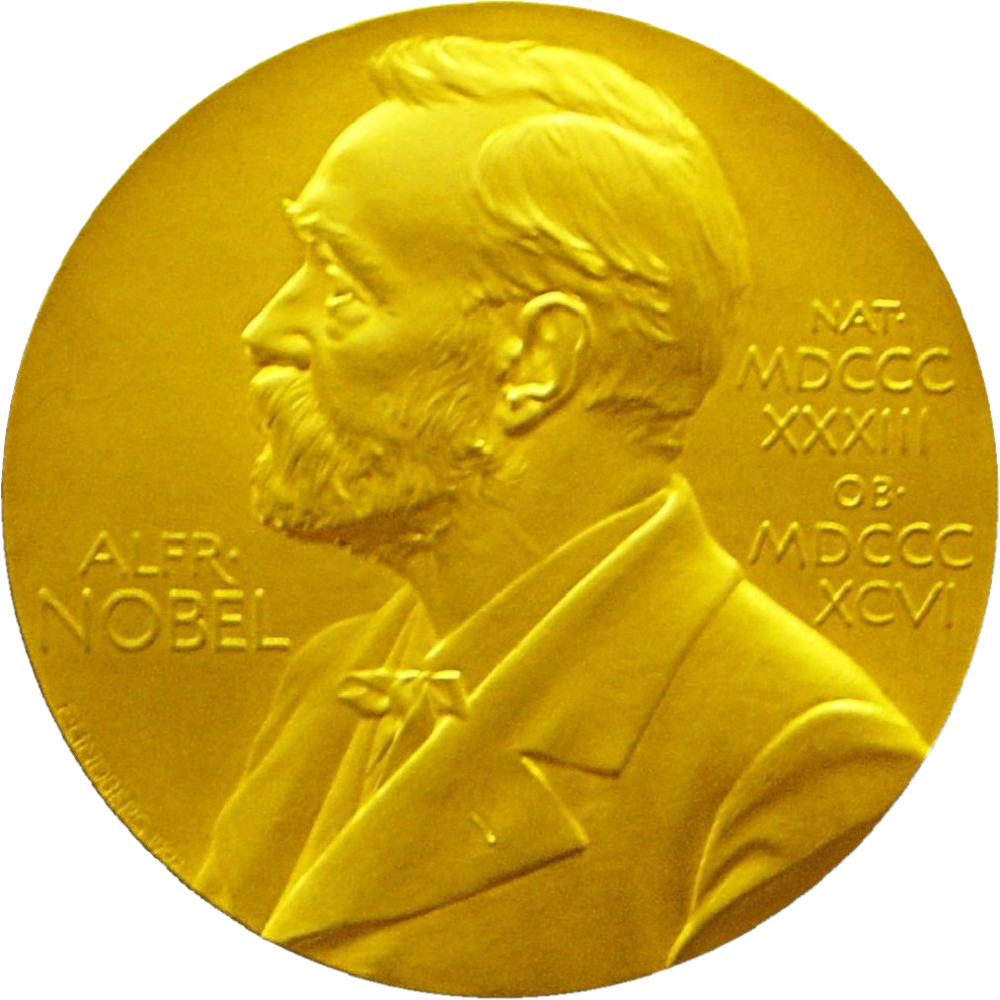

|  |
In 1870, he was admitted to Owens College in Manchester (now University of Manchester) at the unusually young age of 14 and came under the influence of Balfour Stewart, Professor of Physics, who initiated Thomson into physical research He moved on to Trinity College, Cambridge, in 1876. In 1880, he obtained his Bachelor of Arts degree in mathematics (Second Wrangler in the Tripos[12] and 2nd Smith's Prize).[13] He applied for and became a Fellow of Trinity College in 1881.[14] He received his Master of Arts degree (with Adams Prize) in 1883. Thomson was elected a Fellow of the Royal Society (FRS)[1][42] and appointed to the Cavendish Professorship of Experimental Physics at the Cavendish Laboratory, University of Cambridge in 1884.[2] Thomson won numerous awards and honours during his career including:
|